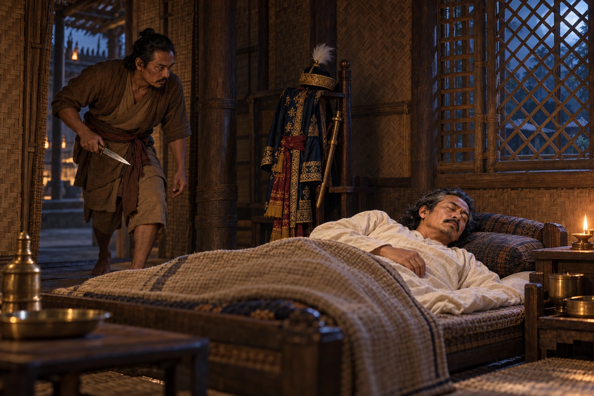

Assassination of Suhungmung
January 1539 · Swarganarayan’s kingdom

The great king Suhungmung is stabbed in his sleep by his servant Ratiman. His son Suklenmung and a Kachari queen are suspected of the plot.
Depicts the moment before the attack. Suklenmung and the queen are absent; their complicity remains an allegation.
People: Suhungmung (Swarganarayan), Suklenmung (Garhgayan Roja)
Open this scene in the interactive archive · Follow this event on MAP